基本git使用及RMarkdown用法
2020-04-12
1 Preparation
安装R、RStudio、Git软件
1.1 安装R及RStudio
R是底层软件，RStudio是使用它比较方便的软件，界面友好。
- 安装R
1.打开网址 The Comprehensive R Archive Network
2.选择 Download R for Windows
3.选择 install R for the first time
4.选择 Download R 3.x.x for Windows
5.然后点开对应的.exe文件，安装好
- RStudio
1.打开网址 RStudio – Open source and enterprise-ready professional software for R
2.下载 RStudio，Shiny和R Packages两个暂时不用管
3.选择Free的第一个 Download RStudio – RStudio
4.然后点开对应的.exe文件，安装好。
1.2 安装Git
选择适合电脑版本的git并下载
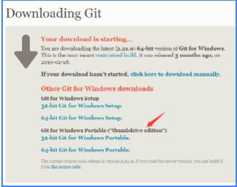
- 注意安装时设置Git可以被第三方软件调用，为后期RStudio使用(如果你们看不到图片，就注意一下next时不选择默认的
use git from git bash only,选第二个git from the command line......)
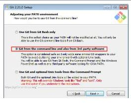
2 Git基本使用
2.1 Clone项目
clone项目相当于将Github上的项目（usd-dea里的所有文件夹及文件）复制到本地，这样后续我们可以直接运用git、RStudio完成本地上传文件(push)、从Github更新文件(pull)以保证本地与远程(Github)文件的一致。
- 打开RStudio，clone你的第一个项目(usd-dea)
file-->New Project-->Version Control-->Git
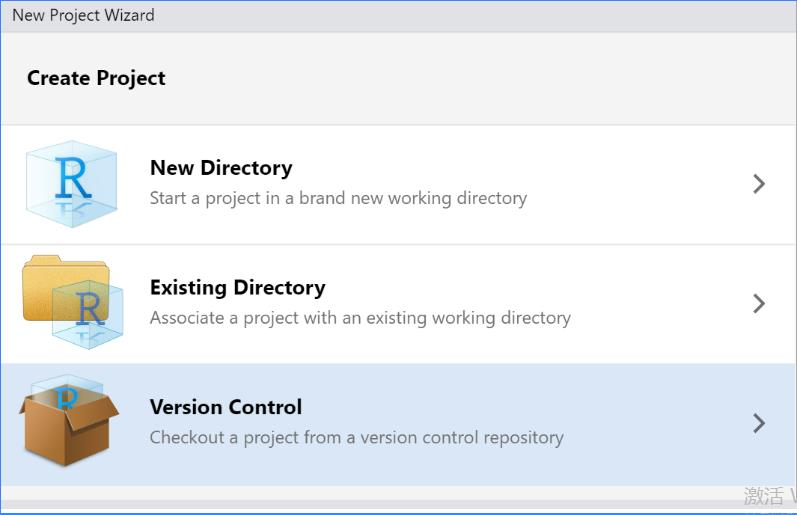
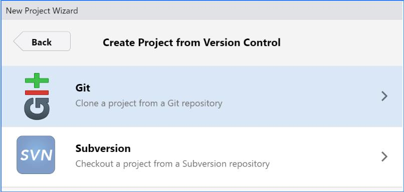
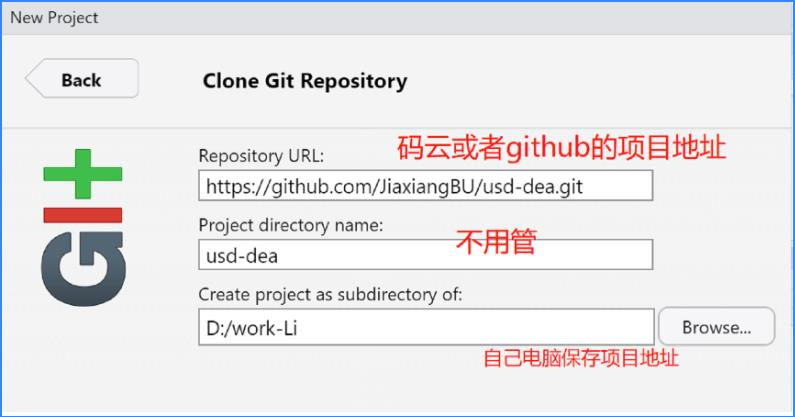
- github项目地址:圆圈里是地址，点方框复制，如下图
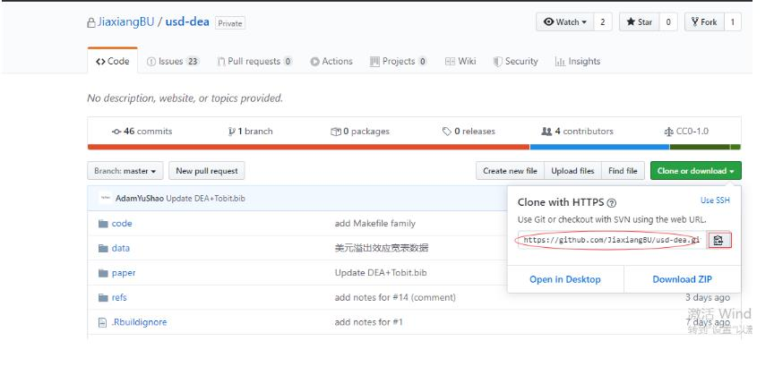
- 然后等着，成功之后
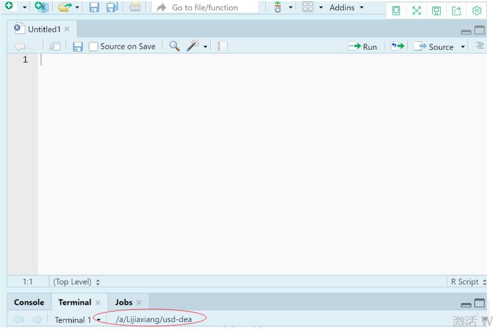
以上，clone项目完成
2.2 基本Git命令的使用
git pull, git add, git commit, git push
这是我们最常用到的命令，建议熟练使用。 为了更好理解git命令，这里举例介绍文件更新和上传的方法一：
2.2.1 git pull
- 目的:将Github上别人提交后的文件更新到本地，保证本地与远程文件的一致
- 操作:鼠标定位到本地储存项目(usd-dea)的地址——即上面clone项目时自己选择的地址，右键
git bash here命令行输入：git pull origin master
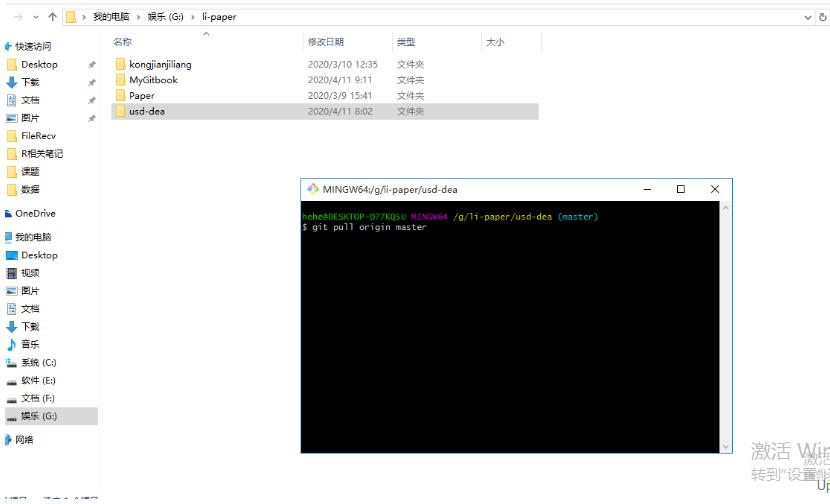
- 注意：在add 和 push 文件前都要进行git pull操作，否则容易发生错误。 如果实在怕错，可以在添加文件前每次都进行pull操作
2.2.2 git add
目的：添加本地文件到缓存区，为接下来push缓存区文件到github(远程)准备
操作：在想要(在github)上上传文件夹的本地文件夹目录下方，添加文件，然后将鼠标定位到本地储存项目(usd-dea)的地址，同样
git bash here，或者直接在前一步基础上进行命令行输入：git add .
2.2.3 git commit
- 目的：add 文件后，commit想描述的信息，比如想关联某一issue，可以直接#该issue
- 操作：附注改文件的XXX信息，并关联第54个issue:
git commit -m "XXXX #54"
2.2.4 git push
- 目的:将add在缓存区的文件push到远程Github上
- 操作:命令行输入：
git push origin master
如果还有不明白的地方，可以参考：
https://www.cnblogs.com/zeo-to-one/p/8367801.html
https://jiaxiangbu.github.io/learn_git/output/git-github-gitlab-learning-notes.html
3 RMarkdown使用
主要包括RMarkdown基本用法、文献综述编写
3.1 RMarkdown基本用法
3.1.1 引用
当我们想引用文献中的某段话时，单引号+这段话：
>XXXXXXXX
3.1.2 加粗部分信息
**XXXXXX**
3.1.3 文字变为斜体
*XXXXXX*
3.2 RMarkdown文献综述
3.2.1 准备工作
- 改镜像：安装Rmarkdown之前先把镜像改成清华的，不然容易被墙
tools-->global options-->packages-->change

安装包：安装某些包，用来读取文件
安装包用命令在console里面：
install.packages("包名")调用包时：
library(包名)编辑数学公式：mathpix官网下载后，用mathpix截图需要的公式粘贴后，复制用双$框柱的内容到Rmd文件里即可，很简单，不会使可以问我，也可以看一下学长的这篇文章 https://jiaxiangbu.github.io/awesome-application/learning_notes.html
添加图片：如果综述需要图片，先将图片保存到本地项目的figure文件夹下，然后在RStudio中
graphics("图片目录")调用，如下图
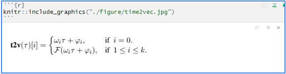
bibtex文件：
1.下载bibtex：书写Rmd文献综述前，要找到参考文献的bibtex，一般paper做citizatio时可以直接下载bibtex(谷歌学术可下载)，比如这个paper我要下载为bibtex格式
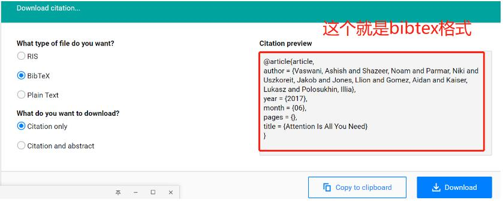
2.保存为bib文件：本地新建文本文档，把框住的部分复制进去，并另存为XXX.bib(文档拓展名.txt改为.bib)，编码形式也改为UTF-8
注意：
1.为了防止R读取文件出现错误，一定要注意最好英文命名bib文件，不要有空格和特殊字符，同时编码形式改为UTF-8
2.一篇文献综述可能包含几篇文献，可以把这几篇文献的bibtex放到一个bib文件里，这样方便调用
3.2.2 Rmd文献综述
1.新建Rmd文档
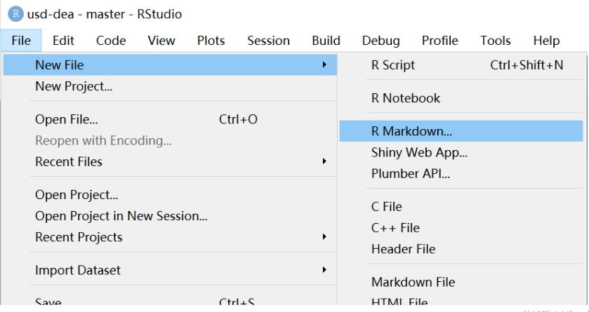

- 默认的output是html文件，要改成github的，如果你需要pdf版本的，也可改成pdf
- bibliography后面的是bibtex所在的文件目录，你下载并整理好bibtex之后，把它放到本地项目的refs里，refs后面是bibtex的名字
2.书写文献综述
`—
title: “文献综述”
author: “苗蕾蕾”
output: github_document
bibliography: ../refs/add.bib
{r,include = FALSE}
knitr::opts_chunk$set(warning = FALSE , message = FALSE)`
@XXX 说明借鉴的地方
或者[@XXX] 说明借鉴的地方
# 参考文献 {-}
@XXX就是bibtex里@article{后面的内容，复制粘贴到这里就好了@XXX借鉴的地方表示XXX认为……[@XXX]借鉴的地方表示……(XXX)
3.knit出md文件或者其他形式的文件
knit出的结果会自动保存在本地项目的output文件夹中，且与你命名的Rmd文件名称相同
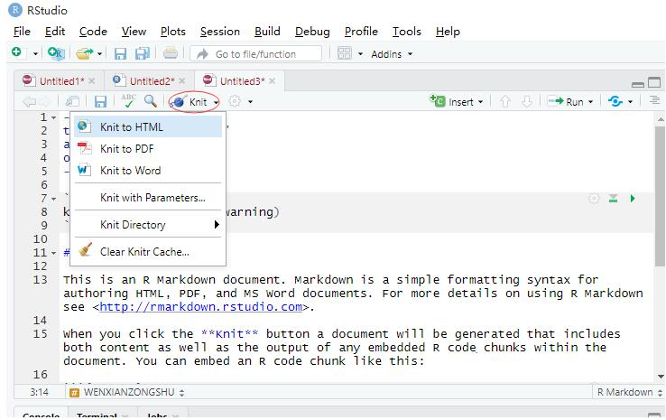
3.2.3 文献综述提交
方法一：见2中git 基本命令的使用，按顺序先pull、再add这些文件、commit描述信息、push到github上。
方法二：直接在RStudio中操作：
1.做的改动全部选上，或者选择你要选的
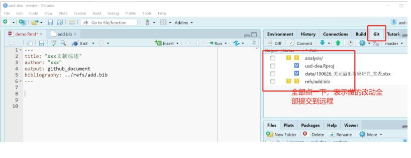
2.commit
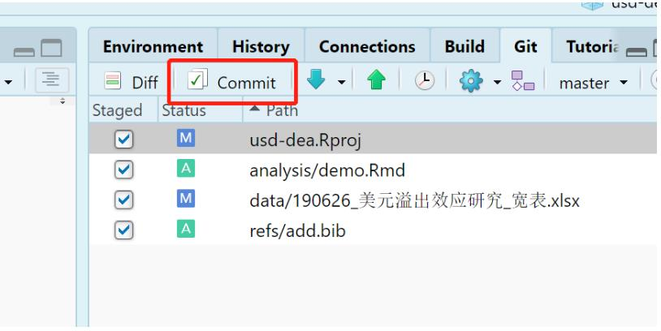
3.增加commit的信息，一般就是你修改了什么
4.pull
5.push
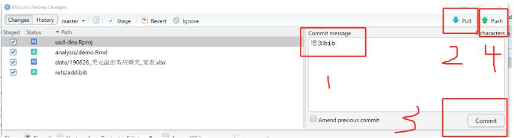
- 方法三：直接在github相应的文件夹下upload文件